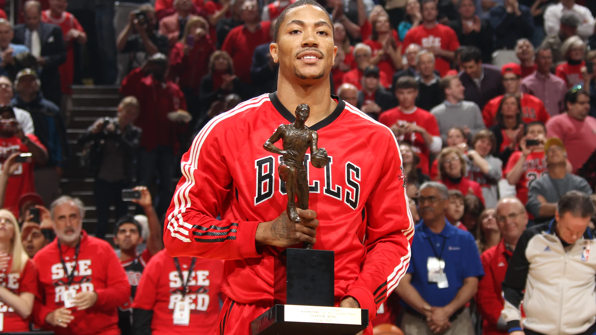

"All the days that you wake up you have one job and that's to get better, every single day."
Name: Derrick Rose
Nickname: Pooh
Born: October 4 1988 in Englewood Chicago, Illinois
Height: 6"3"
Derrick Rose is my favorite NBA player. His athletism is out of this world. His blistering speed, explosiveness, and ruthless path to victory is incredibly fun to watch. As soon as he got into the NBA put the league on notice with his hardwork and determination. He eventually became the youngest MVP in NBA history. His potential was sky high, but unfortunately a devastating injury robbed him of future stardom. He never regained his athleticism and many criticized him as never being the same Rose as before. From that point on his career has been riddled with injury after injury and setbacks year after year. However instead of retiring, Rose continues to do what loves the most: play basketball. He is a true inspiration to never give up and prove doubters wrong.
Derrick Rose's story is one that motivates and captivates athletes, people, and children all over the world. His rise to fame, his downfall, and his never-ending perserverance speaks to us all.
| Team | Years | Jersey Number |
|---|---|---|
| Chicago Bulls | 2008 to 2016 | #1 |
| New York Knicks | 2016 to 2017 | #25 |
| Cleveland Cavaliers | 2017 to 2018 | #1 |
| Minnesota Timberwolves | 2018 to 2019 | #25 |
| Detroit Pistons | 2019 to Present | #25 |
| NBA | College | High School |
|---|---|---|
| 2011 NBA Most Valuable Player | NCAA Tournament All-Final Four Team | Class AA State Championship |
| 2009 NBA Rookie of the Year | All-Conference USA First Team | Class AA Tournament MVP |
| 2011 & 2012 NBA All-Star | Conference US Freshman of the Year | 2007 Illinois Mr.Basketball |
| 2009 NBA Skills Challenge Champion | 2K Sports College Hoops Classic MVP | 2007 McDonald's All American |